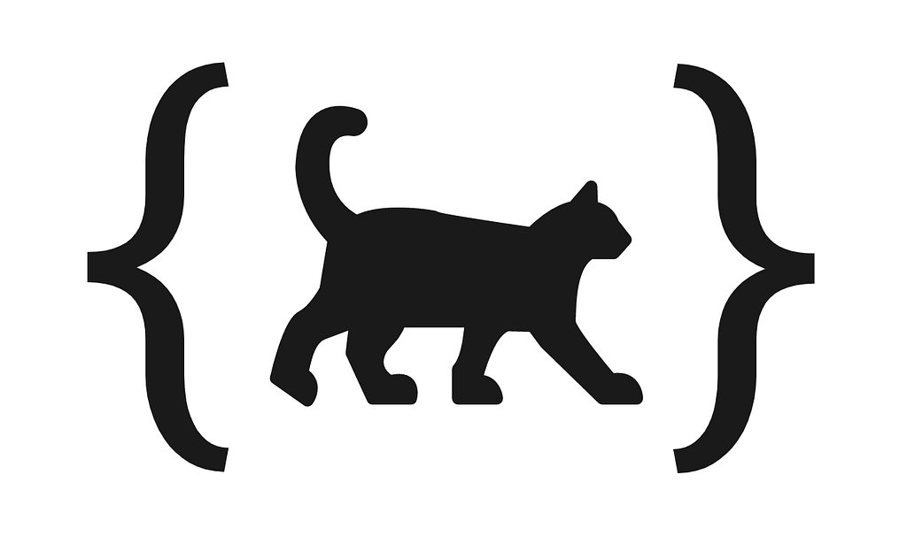
DLQ (Declarative Language for Quantum) is a small programming language that I made as my undergraduate final project (TCC) in Computer Engineering. As the name suggests, it is a declarative language aimed at programming quantum computers. Currently, it can be used to solve, specifically, satisfiability problems of simple algebraic expressions, composed of natural numbers and logical, arithmetic and relational operators. The scope of the initial version of the language, which I presented to the examining board at the defense of my final project, focuses on this kind of application and on a few features. However, in the future, with the addition of new features, other applications may be considered, such as combinatorial optimization and solution counting.
My motivation for writing this informal article is that, since this is an open-source project that took me a lot of work to develop (and, by the way, I could have had a final project approved with much less work), I do not want to simply leave it to gather dust in an abandoned GitHub repository. That is why I am using this post to promote the project.
Throughout this article, I will give an overview of quantum computing, general aspects of the language (ideas and characteristics), characteristics of the compiler, and also perspectives: improvements that should be made, technical problems that should be fixed and ideas for the future. For those who want to get to know the project in more depth, I suggest reading the monograph (whose link is available in the reading suggestions section) and the source code of the compiler (link to the repository at the end of the section “The DLQpiler compiler”).
This section is dedicated to those who have never heard of — or just have not looked deeply into — quantum computing. And right away, I want to make clear that I know there is a trend of products, services and content that use the terms “quantum” and “quantum physics” in an improper, disrespectful and fraudulent way. I do not go along with this trend. Everything I write here regarding quantum computing is based on reliable scientific references, such as academic papers and books. In fact, at the end of this article, I make some recommendations of books and papers to read.
Quantum computing is a computing paradigm on the rise recently (but not new), based on the theory of computation, quantum mechanics and quantum information theory. Some of the main pioneers in this area are Feynman [10], Deutsch [9], Shor [11] and Grover [1]. The idea of this paradigm is to use the “special” properties of quantum systems to solve computational problems with some reduction in computing time. Two of these special properties are: quantum superposition, which is the ability of quantum systems to exist in sums of states that classically would be mutually exclusive, and quantum entanglement, explained later. To perform computations using these properties of quantum systems, quantum computers are used.
The basic principle of quantum computing is the use of quantum bits, or simply qubits. A qubit is a unit of information that, like the classical bit, has two logic levels, which are usually represented as 0 and 1. In contrast to the classical bit, which can only exist at one logic level at a time, the qubit can have both logic levels at the same time, through the phenomenon of quantum superposition.
The logic levels of the qubit are described algebraically as orthogonal unit vectors |0⟩ = [1 0]ᵀ and |1⟩ = [0 1]ᵀ, where |0⟩ and |1⟩ are analogous to the respective classical logic levels 0 and 1.
The state of a qubit is described as a linear combination of |0⟩ and |1⟩, as shown in the following equation:
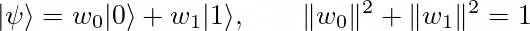
In this equation, |ψ⟩ is the state of a qubit and (w₀,w₁) are complex coefficients called “probability amplitudes”.
When the state of a qubit is measured with an instrument (and I will not go into detail about how this is done physically, because my background is computing, not physics), the quantum state collapse occurs, which causes one of the logic levels |0⟩ and |1⟩ to be observed non-deterministically. The probabilities of observing these logic levels are, respectively, |w₀|² and |w₁|².
There are also quantum states composed of multiple qubits. For example: the 2-qubit states |0,0⟩, |0,1⟩, |1,0⟩ and |1,1⟩, which can also be written as |0⟩, |1⟩, |2⟩ and |3⟩, correspond to, respectively, [1 0 0 0]ᵀ, [0 1 0 0]ᵀ, [0 0 1 0]ᵀ and [0 0 0 1]ᵀ.
Qubits can be connected in such a way that their states are inseparable and their collapse probabilities are correlated. This is called quantum entanglement. An example of an entangled state is the Bell state, defined in the following equation:
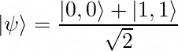
This state is composed of 2 qubits. When these qubits are measured, the logic levels observed are always |0⟩|0⟩ or |1⟩|1⟩.
The processing of the states of the qubits is done by quantum circuits composed of quantum logic gates. A “quantum logic gate” is a term for a unitary matrix with 2ⁿ rows and columns that processes states of n qubits. A quantum circuit, in turn, is a diagrammatic representation of a quantum algorithm that consists of a chain of quantum logic gates applied to a set of qubits. The combination of the operations of a quantum circuit, between the initialization and the measurement of the qubits, also corresponds to a unitary matrix with 2ⁿ rows and columns.
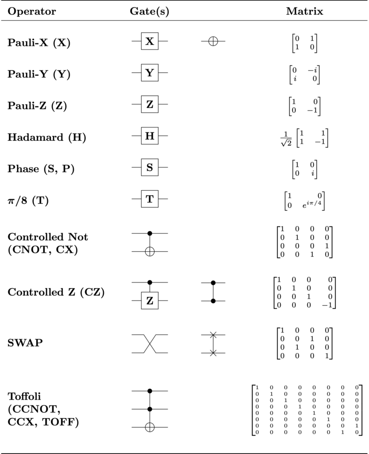
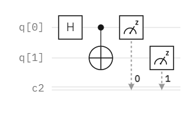
Each quantum logic gate performs a transformation on the state of the qubits for some purpose. The Pauli-X gate, for example, can be thought of as a quantum analog of the classical not logic gate, since it performs the transformations |0⟩↦|1⟩ and |1⟩↦|0⟩. The Controlled-NOT and Toffoli gates perform, respectively, the transformations |x, y⟩↦|x, x⊕y⟩ and |x, y, z⟩↦|x, y, z⊕xy⟩, where (x,y,z)∈{0,1}³. Understanding the role of each of the other quantum logic gates requires a more in-depth study of the subject. If you are interested, I recommend reading the articles Qubits and Quantum Logic Gates.
It is evident that quantum circuits are representations analogous to classical digital circuits, composed of not, and, or, xor, nand and nor logic gates. In fact, any classical combinational digital circuit can be “translated” into a quantum circuit (sometimes requiring some extra qubits), which includes arithmetic circuits (which perform operations such as addition, subtraction and multiplication with bits) and relational circuits (which perform equality, inequality, less-than and greater-than comparisons). Examples of works that deal with arithmetic and relational quantum circuits are the papers by Vedral et al. [5], Draper [6], Ruiz-Perez & Garcia-Escartin [7], and my monograph.
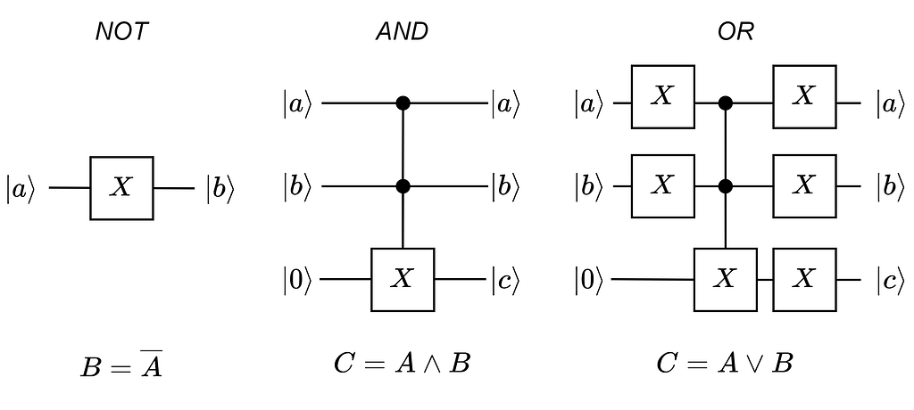
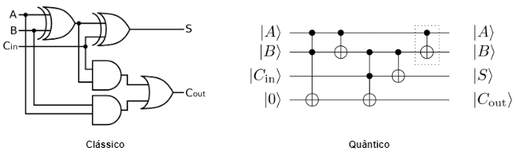
Arithmetic and relational quantum circuits have an advantage over their classical equivalents, which comes from the very linearity of quantum logic gates: the capacity for parallel processing. Perhaps you do not remember seeing this in linear algebra classes (or perhaps you have not even studied linear algebra), but any linear operator F (which can be a unitary matrix) has the following property:
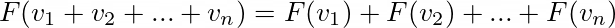
That is: by applying a linear function to a superposition of data, we obtain a superposition of each of these data “processed” by the function. For example: a quantum adder can be defined as a unitary matrix U such that U|x⟩ = |x+c⟩. Applying this matrix to a superposition state |X⟩ = (|0⟩+|2⟩+|4⟩+|6⟩)/√4, considering c=1, we have:
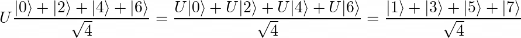
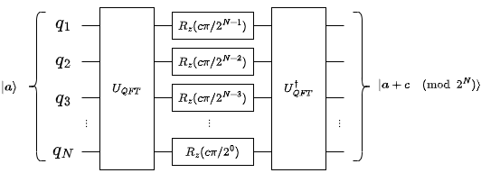
As the equation above shows, we had a superposition of the values 0, 2, 4 and 6, which we processed in parallel using the unitary matrix U, obtaining a superposition of the values 1, 3, 5 and 7. It is like a SIMD instruction of a classical computer, but using quantum phenomena instead of multiple digital processors. But there is a problem: when the qubits of this system undergo a joint measurement, only one of the values of the superposition is obtained, at random (remember what was said about quantum state collapse above). So, something more is needed for this parallel processing power to become useful in practice, and this is where Grover's algorithm comes in.
Grover's algorithm is a quantum algorithm for searching unordered data sets, created by the computer scientist Lov Grover [1]. What this algorithm does is, basically, “mark” the data of the superposition that satisfy a certain condition using an oracle operator Uₒ: |x⟩↦ (−1)ᶠ⁽ˣ⁾ |x⟩, and increase the probability of observing these states using a diffusion operator Uₛ=2|s⟩⟨s|−I. With this, we can use logical, arithmetic and relational quantum circuits to solve satisfiability problems.
A satisfiability problem can be stated, in general, as follows: find a tuple of values (v₁,v₂,…,vₙ) that satisfies f(v₁,v₂,…,vₙ)=1, where f(⋅) is a binary function (which results in 0 or 1), and the v's are numerical values. Three examples of computational problems that can be defined as satisfiability problems are:
I do not know if I managed to make you understand these quantum computing concepts. If I did not, that is no problem, because my real intention with this section is to show how complex it is to program a quantum computer “by hand”. And that is why I created the DLQ language: to abstract all this mathematics, making it easier to program quantum computers.
The basic idea I had when I started thinking about creating a programming language for quantum computing was to use logical, arithmetic and relational quantum circuits to create a language with expressions formed by logical, arithmetic and relational operators. For this to be useful in practice, these logical, arithmetic and relational circuits would be associated with a search, optimization or counting algorithm, such as Grover's search algorithm [1], the quantum counting algorithm [8] and the quantum approximate optimization algorithm (QAOA) [2].
Over time, until I actually started programming the compiler, I thought of several different ways to create a complete paradigm that would abstract quantum circuits and the phenomena of quantum superposition and entanglement. One of the first ideas was to create a structured language where quantum states would be represented by data structures such as array, set and map. It took me a while, but I realized it was a bad idea. In structured programming, we often perform operations that are not possible or are very costly in quantum computing, such as creating independent copies of data structures (no-cloning theorem), overwriting states and iterating for an indefinite time. These last two are irreversible operations. In quantum computing, all operations between the initialization and the measurement of the qubits are reversible. Another idea was to create a functional language where quantum superposition states would be represented by random variables with immutable sample spaces and probabilities. This last idea is better than the first, but it still has a problem: creating a functional language from scratch is complicated. It is not worth working with such a broad scope in an undergraduate final project. Besides, I had never studied lambda calculus, which is the basis of the functional paradigm. The last idea was to create a declarative language that, like functional languages, would not allow overwriting states, but that would not have “complicated” functional programming features, such as lambda functions, recursion, data structures and operators such as map, filter and reduce. This last one was the idea that got off the ground.
Note: overwriting ≠ superposition. Do not confuse them!
The structure of a DLQ code is composed of the following elements:
In the version of the language that I presented to the examining board, the available logical, arithmetic and relational operators are:
In this version, there is only one terminator: amplify. The function of this terminator is to search for the solutions of a binary expression using Grover's algorithm. In future versions of the language, other terminators may be added.
In a DLQ program, all lines, except the last one, define variables. These are not like the variables of imperative languages (such as C, C++, Java and Python), which, roughly speaking, represent small memory spaces with mutable state. Variables in DLQ are immutable and do not necessarily have a defined value until the program finishes running, but they have sets of possible values. They can be defined as follows:
<name> [<size>] in {<value1>, <value2>, <...>, <valueN>};
<name> [<size>] := <expression>;
In the code blocks above, “<name>” represents the name of the variable, “<size>” represents the size of the variable in number of qubits, “<expression>” represents an expression formed by the operators already mentioned, and “<value1>, <value2>, <…>, <valueN>” represents a sequence of N natural numbers.
In the compilation process, a variable defined as belonging to a set of natural numbers {v₁, v₂, …, vₙ} is “translated” into a quantum register (the name we give to a sequence of qubits) that, before the application of the oracle operator and Grover's diffusion, has a superposition state (|v₁⟩+|v₂⟩+…+|vₙ⟩)/√n. A variable defined as the result of an expression f(⋅), in turn, is “translated” into a quantum register used as the “output” register of the chain of logical, arithmetic and relational circuits that solve f(⋅).
The last line of a DLQ program is always dedicated to the amplify terminator. This terminator has the following syntax:
amplify <name> <number> times
In this code block, “<name>” represents the name of the target variable of the search, and “<number>” represents the number of iterations of Grover's algorithm. The target variable is a binary (1-qubit) variable used as the condition of the search.
For each program, there is an ideal number of iterations of Grover's algorithm, calculated from the size N of the search space and the number s of solutions present. In cases where this number of solutions is not known, an assumption (a guess) of the value of s is made. In the next sections, this calculation of the number of iterations is explained and exemplified.
To make the explanation clearer, here is an example of DLQ code that solves the expression (x₁ ∨ ¬x₃ ∨ x₄) ∧ (¬x₂ ∧ x₃ ∧ ¬x₄).
x1[1] in {false, true};
x2[1] in {false, true};
x3[1] in {false, true};
x4[1] in {false, true};
y[1] := (x1 or not x3 or x4) and (not x2 and x3 and not x4);
amplify y 3 times
Finding the solution of an expression composed of binary variables and logical operators is a classic computing problem known as the boolean satisfiability problem. This was the first computational problem to be proven NP-complete.
In the code shown above, 5 variables are defined: x1, x2, x3, x4 and y. All are 1-qubit variables. The first 4 are defined as belonging to the set {false, true} (which is the same as {0, 1}), and the variable y is defined as the result of the boolean expression. In the last line, the amplify terminator is applied to “mark” and search, with 3 iterations of Grover's algorithm, for the tuples of values (x1, x2, x3, x4, y) in which y=1. In general, this number of iterations should be calculated as ⌊(π/4)*sqrt(N/s)⌋, where N is the size of the search space and s is the number of marked solutions. Since there are 4 independent binary variables in the code, there are, in total, 2⁴ possible tuples of values (x1, x2, x3, x4, y). Assuming that there is only one solution to the boolean expression, the number of iterations of Grover's algorithm is then calculated as ⌊(π/4)*sqrt(2⁴/1)⌋=3.
Compiling this code example with the DLQpiler compiler generates the following quantum circuit:
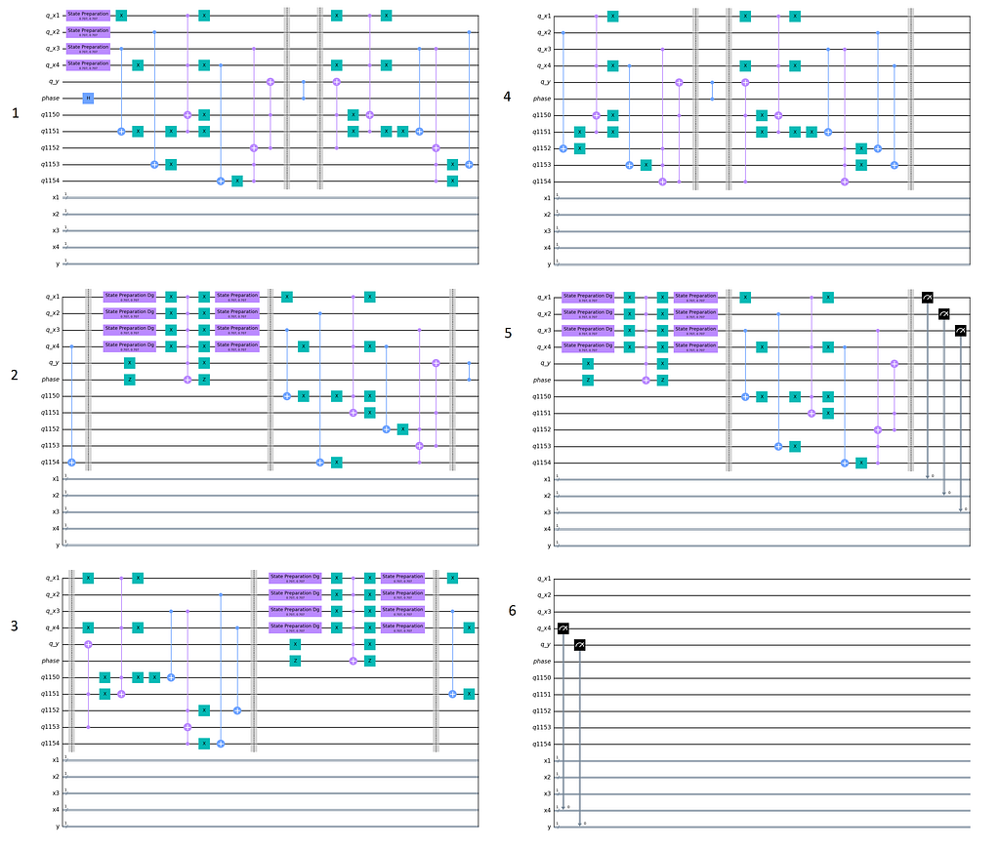
Running this quantum circuit with the aer_simulator simulator, from the Qiskit platform, we get the following table of results:
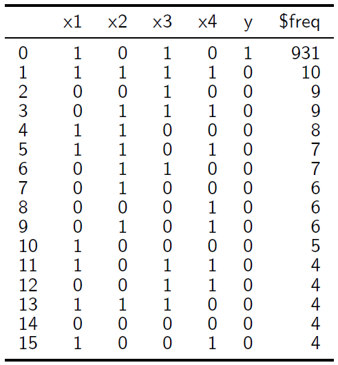
I know that, at first glance, it may be hard to interpret this table. Here we go: quantum circuits are always run with a certain number of shots. The number of shots is the number of times the whole procedure described in the quantum circuit, from the initialization to the measurement of the qubits, is “run”. In each of these “runs” of the quantum circuit, a result is obtained non-deterministically. Each possible result of the quantum circuit has a probability of being obtained in a “run”. What we usually do to analyze the behavior of a quantum algorithm is to run it with a large number of shots and organize the results in a histogram or in a table with an absolute frequency column.
In the table above, we see a column for each variable and, lastly, an absolute frequency column. Each row of the table corresponds to one of the 2⁴ possible tuples of values (x1, x2, x3, x4, y) with its respective absolute frequency (which is proportional to the probability of obtaining the tuple). The simulation was done with 1024 shots. Note that, of all the 2⁴ tuples, the one that represents the solution of the problem is the most frequent. This is the idea of the amplify terminator: to amplify the probabilities of the tuples that satisfy a certain condition.
Now, here is an example of code that solves a prime factorization problem:
p1[4] in {2, 3, 5, 7};
p2[4] in {2, 3, 5, 7};
y[1] := p1*p2=15;
amplify y 2 times
Prime factorization is a computational problem that has no known efficient solution in classical computing. This problem consists of finding, for a natural number k, a pair of prime numbers (p₁,p₂) such that p₁p₂=k. In this example, k=15 was considered.
In the code above, 3 variables are defined: p1, p2 and y. The first two variables are defined as belonging to the set of prime numbers from 2 to 7. Both have 4 qubits. The variable y, of 1 qubit, is defined as the result of the expression p1*p2=15. In the last line, the amplify terminator is applied with y as the target variable and 2 as the number of iterations.
Compiling and running the code described above, we get the following table of results:
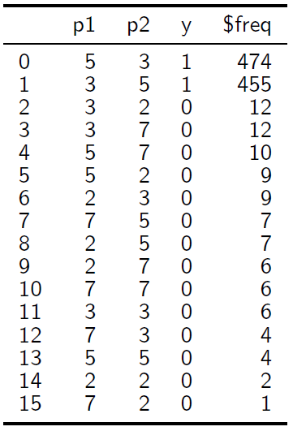
As the table above shows, the tuples (p1, p2, y) with the highest probabilities of being obtained are the solutions (5, 3, 1) and (3, 5, 1).
Examples 1 and 2 were used as proofs of concept in my final project. Another example I would have liked to use is a code to solve a system of equations. However, in all the tests I did of this kind of application, the simulations required more than 100% of the RAM of my computer. A code to solve, for example, a system formed by the linear equations x+2y=5 and 3x-5y=4 would look like this:
x[2] in {0, 1, 2, 3};
y[2] in {0, 1, 2, 3};
s[1] := (x + 2*y = 5) and (3*x - 5*y = 4);
amplify s 3 times
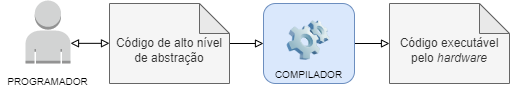
The compiler I developed for the DLQ language was named DLQpiler. The name is a phonetic pun with the word “compiler”. This compiler was developed in Python, and the main packages used are IBM's quantum computing SDK, Qiskit, and the PLY library.
The compilation process of a DLQ code has the following 3 steps:
The following 3 figures illustrate the lexical analysis, syntactic analysis and synthesis processes for the code snippet “y[1] := p1*p2=15” (read the captions).
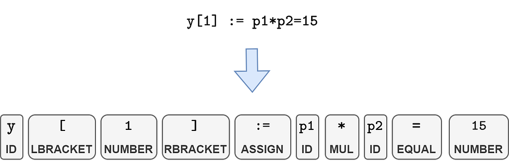
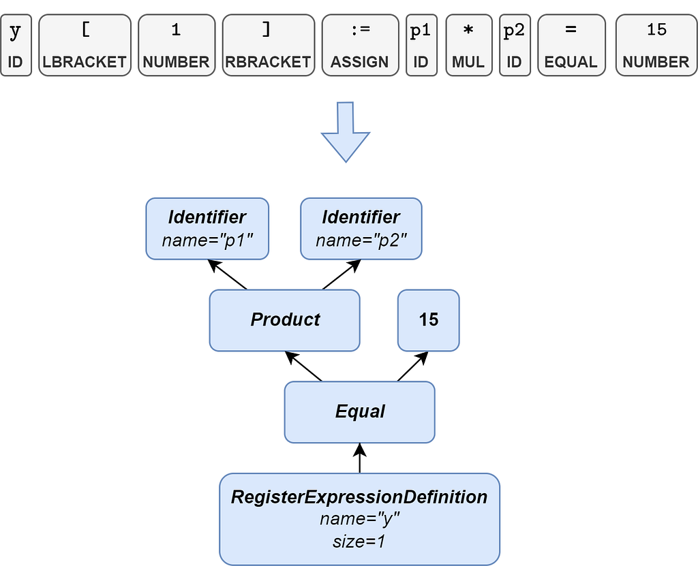
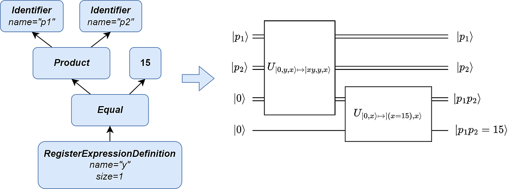
The ABCs of compilers are as follows: lexical analysis is done by a compiler module called the lexical analyzer, or simply “lexer”. This module identifies patterns in the substrings of the input code according to a table of regular expressions (also known as regexes). A regular expression is, roughly speaking, a formalism used in computing to describe patterns in sequences of characters. Syntactic analysis, in turn, is done by a syntactic analyzer module, also called a “parser”. This module generates a syntax tree following the rules of a context-free grammar. A context-free grammar is a type of formal grammar created by Noam Chomsky that consists of a set of rules that define how sequences of lexemes can be combined to form valid “sentences” in the language. I do not intend to go into detail about formal language theory here. A good reference for those interested in the subject is the book Compilers, cited in the reading suggestions section.
The lexer and parser modules of compilers are, in general, developed with the help of tools such as Lex and Yacc, which generate the analyzer algorithms from the grammar rules of the language. In the case of the DLQpiler compiler, the Python Lex-Yacc (PLY) package is used, which is a Python version of the Lex and Yacc tools.
This compiler is open-source. Its source code is available in the following GitHub repository: https://github.com/FilipeChagasDev/dlqpiler
About the project: as an undergraduate final project, it worked out very well. The examining board pointed out some small details to be corrected in the monograph, but graded the work 10 out of 10. As a tool for industrial use, however, it needs to improve. There are obvious improvements to be made, such as fixing bugs in the compiler and adding a code preprocessing step to remove comments. In addition, a detail I only noticed after finishing the first version of the project is that requiring the DLQ programmer to explicitly define the size of each variable is not really necessary, since the compiler itself has functions that calculate the number of qubits needed to store the result of each expression. Some other less simple improvements to be made are:
Implementing more terminators would create very interesting possibilities for using DLQ. One of the practical applications I thought of for the language, back when I was still conceiving it, was training machine learning models. For those who are not familiar with machine learning: “training” a model consists of finding the coefficients that minimize a loss function. This could be done in DLQ if there were a minimum value search or approximate optimization terminator. Another similar problem that could be solved in DLQ if there were terminators of this kind is maximum likelihood estimation, which consists of estimating values for the parameters of a statistical model that maximize its likelihood function. However, as I said, it is not worth working with such a broad scope in an undergraduate final project, and that is why I implemented only the amplify terminator in version 1 of DLQpiler.
Quantum computing is still a large “wilderness” to be explored. Within this “wilderness”, there is an infinity of possibilities and uncertainties for DLQ and for similar projects. One of the biggest difficulties I faced while developing DLQ, and which researchers in the area generally face, concerns the “ceiling” of the maturity of quantum computing itself. Currently, there is a small number of experimental quantum computers around the world, which have few qubits and a lot of noise (they give answers far from what is expected), which still makes us very dependent on simulators. However, the computing time and the amount of memory that a simulator requires grow exponentially with the number of simulated qubits, which makes simulations of little more than 40 qubits already prohibitively expensive. In addition, there is uncertainty about which quantum algorithms will work well or poorly in the medium term. An example of this is the controversial paper by Stoudenmire and Waintal, made available on arXiv in March of this year, titled “Grover's Algorithm Offers No Quantum Advantage” [3], which was quickly rebutted by Scott Aaronson on his blog, with a post titled “Of course Grover's algorithm offers a quantum advantage!” [4].
If you want to cite the DLQ project in an academic work, please do not cite this Medium article directly. Instead, cite my monograph. You can cite it in the ABNT format:
Or in the BibTeX format, if you use LaTeX:
@article{Ferraz_2023,
title={Dlq - projeto de linguagem de programação de alto nível de abstração para computação quântica},
url={http://bdm.ufmt.br/handle/1/3271},
note={Accepted: 2023-07-11T22:32:06Z},
publisher={Universidade Federal de Mato Grosso},
author={Ferraz, Filipe Chagas},
year={2023},
month={Jun},
language={português}
}
I intend to write a formal paper in English about DLQ soon to, at least, make it available on arXiv. When this paper is available, I will put the link and the citation formats here.